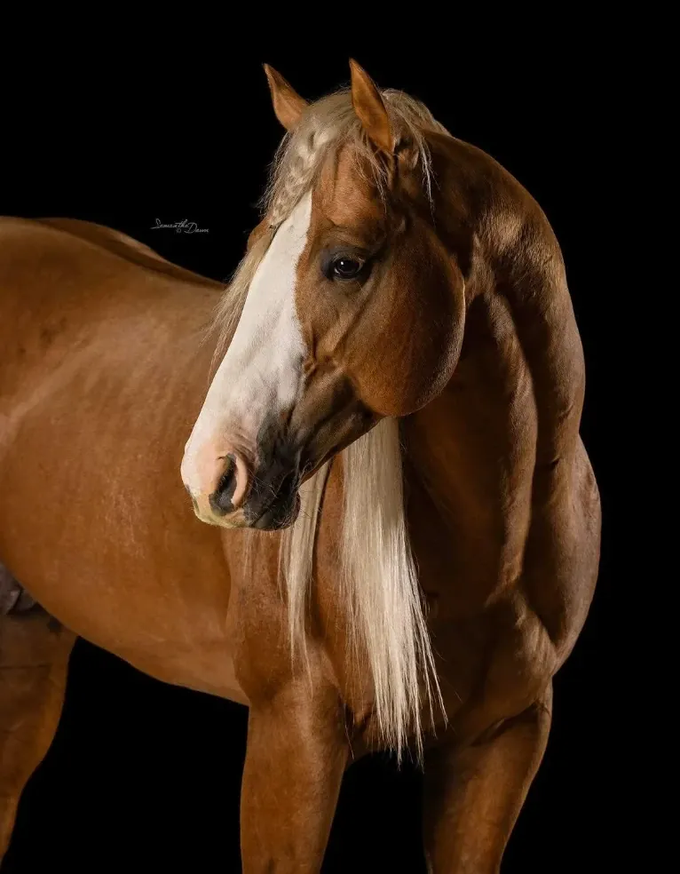

Adios Pantalones
The palomino who rewrote barrel racing. Adios Pantalones is the first and only stallion to pass US$1 million in earnings, and his genetics reach Brazil through a syndicate of which B2B Ranch is a member.
- Born
- 2020
- Coat
- Palomino
- Sire
- Tres Seis
- Dam
- French Bar Belle
- Maternal grandsire
- Frenchmans Guy
- Trainer and rider
- Tricia Aldridge, USA
The numbers of a record holder
- US$ 1 mi+The first and only stallion to exceed US$1 million in barrel racing earnings.
- US$558,000The highest futurity earner of all time in a single season (2024).
- 10×Futurity champion, as well as five-time reserve champion.
- NFR 2025Named AQHA Fan Favorite at the Wrangler National Finals Rodeo.

In his first season, in 2024, Adios won 11 go-rounds, took the average at the Royal Crown Futurity and ended the year as the highest futurity earner in history. He was on the cover of one of the leading Quarter Horse magazines in the United States.
In 2025 he took the same speed to professional rodeos, with wins at Oakdale and Logandale, and passed US$1 million in earnings, something no stallion had done before.
In Brazil, the genetics of Adios are represented by the Adios Pantalones syndicate, formed by B2B Ranch, Haras Zopone, Ycambi Ranch, Haras Fazenda São José, Fazenda Poço das Pedras and Witzler Ranch.
The link to B2B Ranch
- Mended HeartMaternal half sisterAn imported mare in the B2B band. Best time of 16.401 s in 2024.
- Tres SeisSireAlso the sire of Three Carat Diamond, an imported B2B Ranch broodmare.
- Frenchmans GuyMaternal grandsireWhose offspring have earned US$26 million.
- Condomínio Adios PantalonesBrazilB2B Ranch, Haras Zopone, Ycambi Ranch, Haras Fazenda São José, Fazenda Poço das Pedras and Witzler Ranch.
Talk to B2B Ranch about Adios Pantalones
Breeding, genetics and available horses: we will reply on WhatsApp.
+55 (24) 99944-2266 Message us on WhatsApp